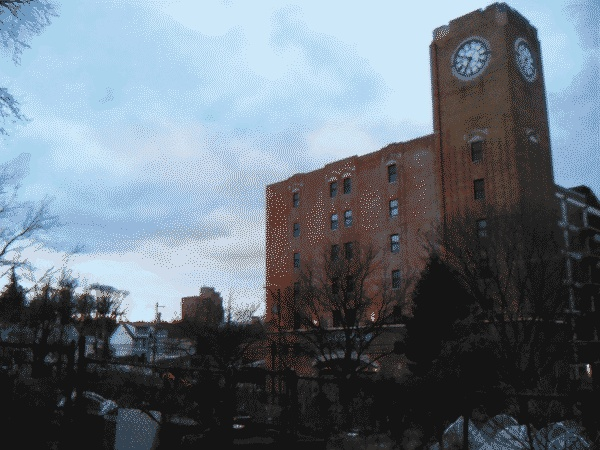
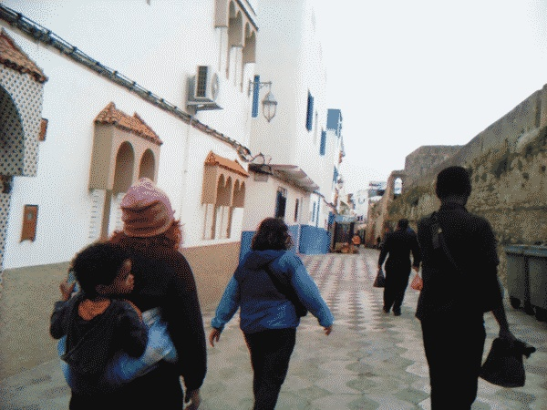
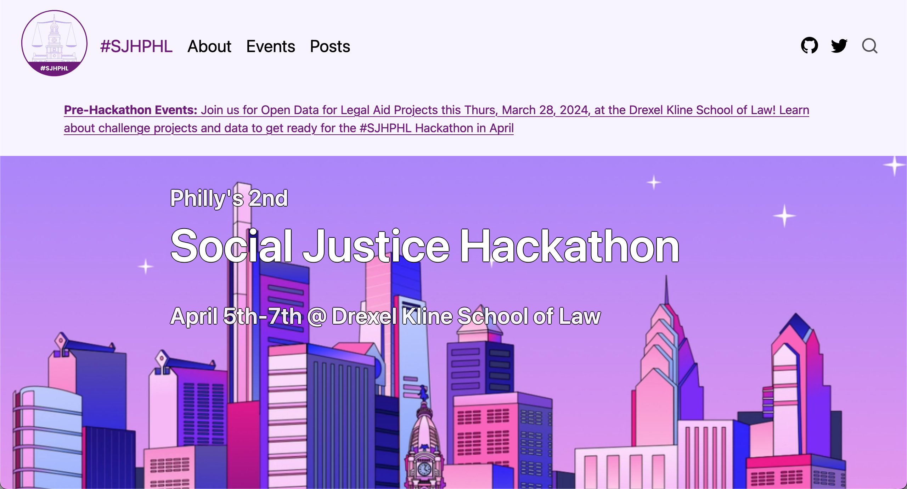
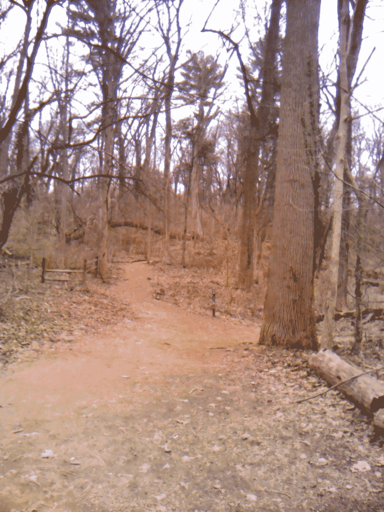
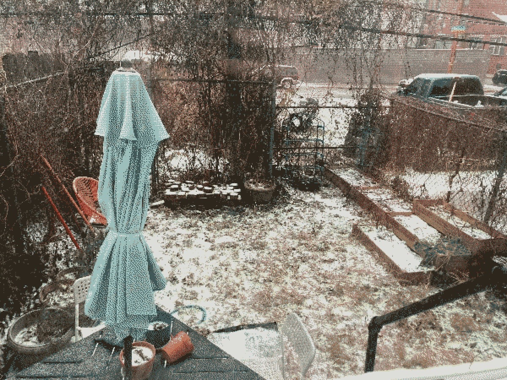

Sketches of the Real

Sun May 12 2024:
I have been sketching lately. Mostly sitting in a place and drawing a building or plant within view. Some of
these sketches are better than others, but these sketches are mental exercise more than making final pieces. I
have been wanting to get back into making more art, whether pixel art like I have on this site already or more
algorithmically made works. So sketching in this case is to help me understand what shapes I am seeing and
thinking about them and what... Read more
I am the hand, not the tool

Despite a very full schedule leading up to the Social Justice Hackathon, I have been really enjoying springtime this year. Some warm
days where we were lucky enough to be able to clear out a lot... Read more
Finding my best duck-ness

Coming through feeling sick and just in time for day light savings, which snuck up on me this year. Usually I am
watching for it like a hawk, but this winter I was very focused on trying to enjo... Read more
After vacation; before spring

Excited to see that the sunlight is just starting to stick around after 6pm lately. A few hours of extra
sunlight really makes a difference to my mood. Weirdly enough the snow in Philadelphia th... Read more
Social Justice Hackathon Website

The website for the Philadelphia Social Justice Hackathon. Built with Michael Chow, Hao Ye, Jake Riley, and Iliana Miltiadous. For an event happening April 5-7, 2024.
Back in the saddle

After a few weeks working at my new job and settling into new habits, there's a part of me that feels like I'm
waking up from something. I really did not enjoy my last job. While I knew it was t... Read more
New year. New job. New habits.

New year. I am newly 35 years old and just came through a tough but still good year. Many
years have been tough for me, but in the grand scheme of tough years, 2023 was pretty easy on me. This y... Read more